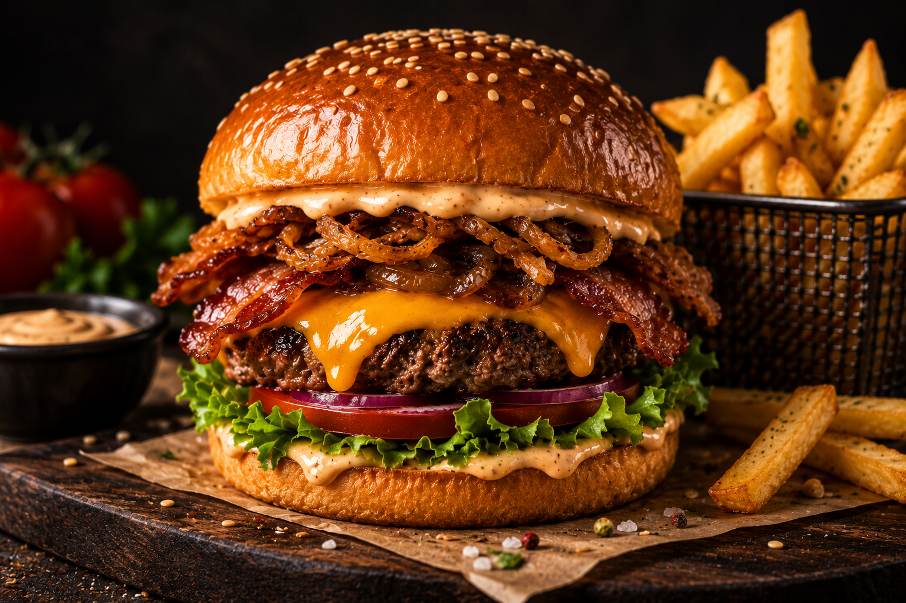
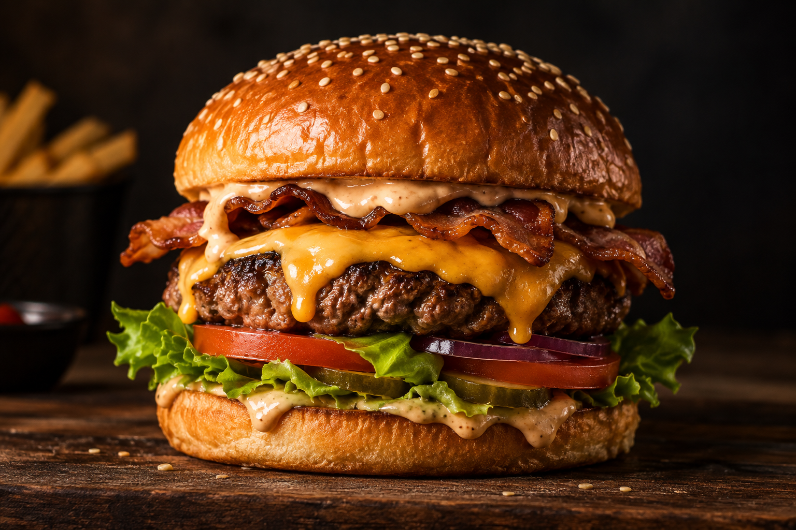

Bestseller
3 890 Ft
Dupla Smash BurgerDouble Trouble
2× marha, cheddar,
hagymalekvár, crush szósz
Szaftos smash burgerek, tűzforró
nápolyi pizzák és olyan szószok,
amikről még holnap is beszélni fogsz.

Nem fine diningot játszunk. Kézzel formázunk, helyben sütünk, és csak olyat adunk ki, amit mi is azonnal felfalnánk. A tésztánk 48 órát pihen, a húspogácsánk pedig rendelésre kapja meg a ropogós kérgét.
★ 4,9 / 5
1075 Budapest
Madách Imre út 7.